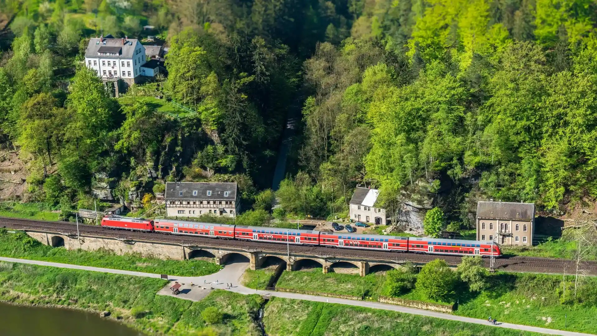

Data
- Area:
- 41,291 km2
- Population:
- 9,141,219
- Capital:
- Bern
- Languages:
- German, French, Italian, Romansh
- Currency:
- Swiss franc
- Time Zone:
- UTC+1
- Calling Code:
- +41
- Internet TLD:
- .ch, .swiss
Weather
- Temperature:
- Conditions:
- Showers of Rain and Snow
- Wind:
- Wind Chill: